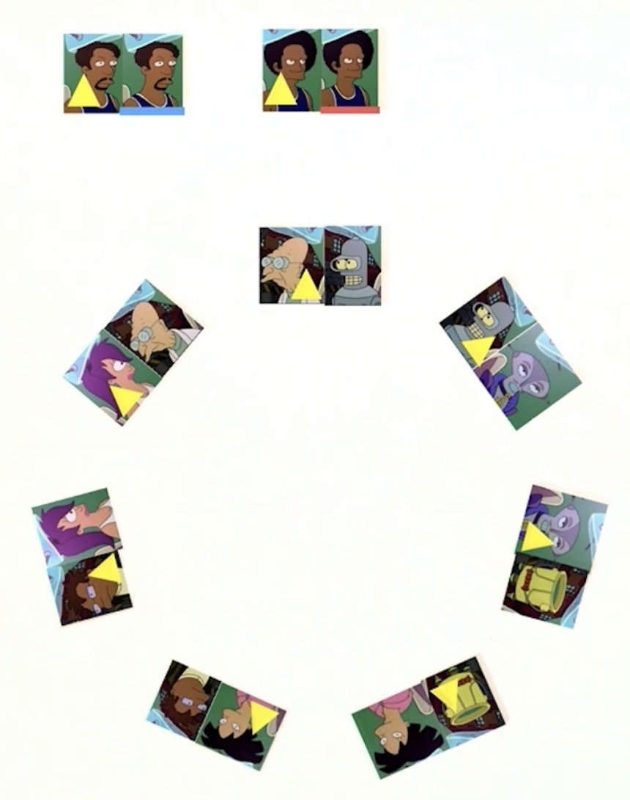

Futurama Theorem
Futurama is a science fiction sitcom created by Matt Groening (also the creator of The Simpsons and Disenchantment). Set in the 31st century, the show follows the adventures of Philip J. Fry, a man who is cryogenically frozen and wakes up in the future. He joins a diverse crew of people and creatures, including a one-eyed pilot, a bending robot, an alcoholic robot, and a lobster-like alien aboard the spaceship Planet Express. Through comedy and satire, Futurama explores a wide range of themes, combining humor with science fiction elements. The characters navigate a futuristic world filled with bizarre technology, intergalactic politics, and social commentary. Futurama has had a very dedicated fan base since its debut in 1999, and is a show known for its intelligent writing, creative storylines, and clever humor.
In "The Prisoner of Benda", Professor Farnsworth (a somewhat mad scientist type of character) is finally able to test out a machine that he created which can switch the minds of two people. Farnsworth and Amy, an engineering student and helper of the professor, are the first 2 people to switch minds, and when they test the machine out, they soon realize that there is a major error in the way the machine works. Once two bodies switch minds, those same bodies cannot switch back. However, throughout the episode, multiple characters end up switching minds and bodies for their own personal gain, unaware of the glaring issue with the machine. Once the mind switching gets out of hand, the crew needs to figure out a way to get everyone's minds back in the proper body.
This proof demonstrates that in a body swapping scenario where no pair of bodies can switch minds more than once, after any sequence of bodies switching minds, there is a way to return each mind to the original body that it belongs to by introducing two new individuals who have not been part of the sequence and using them as a temporary storage of sorts. More formally.
Let $A$ be a finite set and let $a$ and $b$ be distinct objects that do not belong to $A$. Any permutation of $A$ can be brought back to the identity permutation by applying a sequence of distinct transpositions of $A \cup \{x, y\}$, each of which includes at least one of $x, y$.
First let $\pi$ be some $k$-cycle on $[n] = \{1 \cdots n\}$. Without loss of generality write,
$$ \pi = \begin{pmatrix} 1 & 2 & 3 & \cdots & k & k+1 & \cdots & n \\ 1 & 2 & 3 & \cdots & k & k+1 & \cdots & n \end{pmatrix} $$
Let $(a b)$ represent the transposition that switches the contents of a and b.
By hypothesis $\pi$ is generated by distinct switches on $[n]$.
Introduce two "new bodies" $(x, y)$ and write,
For any $i \in 1, \cdots , k$ let $\delta$ be the permutation obtained as the composition,
$$ \delta = (x_1)(x_2)\cdots(x_i)(y_{i+1})(y_{i+2})\cdots(y_k)(x_{i+1})(y_1) $$
Note that each switch exchanges an element of $[n]$ with one of $(x, y)$, so they are all distinct from the switches within $[n]$ that generated, and also from $x, y$. By routine verification,
$$ \pi * \delta = \begin{pmatrix} 1 & 2 & 3 & \cdots & k & k+1 & \cdots & n & x & y\\ 1 & 2 & 3 & \cdots & k & k+1 & \cdots & n & y & x \end{pmatrix} $$
i.e. $\delta$ inverts the $k$-cycle and leaves $x$ and $y$ switched without performing the transposition $(x y)$.
Now let $n$ be an arbitrary permutation on $[n]$; it consists of disjoint cycles, and each can be inverted as above in sequence, after which $x$ and $y$ can be switched if necessary via $(x y)$, as desired.

To rephrase what is stated in the proof of the episode, let there be a permutation $\pi \in S_n$ , where $S_n$ the set of all permutations of $n$ things and let us assume that $\pi$ can be written as a product of distinct transpositions (the permutation $\pi$ represents the shuffling of the minds). We are saying that there exists a permutation $\delta \in S_{n+2}$ (which is the set of all permutations of $n+2$ things) such that $\delta\pi = i$ where $i$ is the identity.
Let us take the Futurama episode problem. There are 9 characters: Professor Farnsworth (P), Amy (A), Leela (L), Bender (B), Emperor Nikolai (E), Scruffy's Washbucket (W), Zoidberg (Z), Fry (F), and Hermes (H). All of the switches that occur during the episode are as follows, written in cycle notation:
$$ (AH)(E B)(W B)(Z F)(LA)(PB) (AP) $$